Dell Premier · B2B e-commerce
Dell Premier Homepage Redesign
Premier Homepage is the central hub where business customers shop for and manage end-to-end solutions through a simple, personalized online platform. I co-led the research and strategy, and the redesign lifted order value and revenue per visit.

+9.9%
average order value
+7.1%
revenue per visit
4 mo
Phase 2 redesign, delivered with a new team
00 — Problem
Customers couldn’t navigate Premier
Customers were having difficulty navigating Premier, prompting them to contact sales representatives or leave Premier entirely.
01 — Discovery
Listening to stakeholders and customers
Stakeholder research: 6 workshops with the Premier HP stakeholders, 2 with the global merchandising team, and 1 ideation and 1 problem statement workshop with the core team.
Customer research: 10 Premier customers across medium business, commercial, channel and sales representatives. The goal was to uncover gaps in their journey, validate expectations and test hypotheses.
- 10/10 want to talk to their sales representatives to purchase and update products, because it’s easier than doing it themselves
- 10/10 want to place bulk orders quickly, but struggle with the current interface
- 10/10 don’t find the current homepage content useful, since they rarely buy outside their preconfigured products
- 9/10 want to customize Premier to suit their needs
Stakeholders flagged clarity, information access and personalization, automation of common actions, collaborative shopping, and notifications such as expiring quotes.
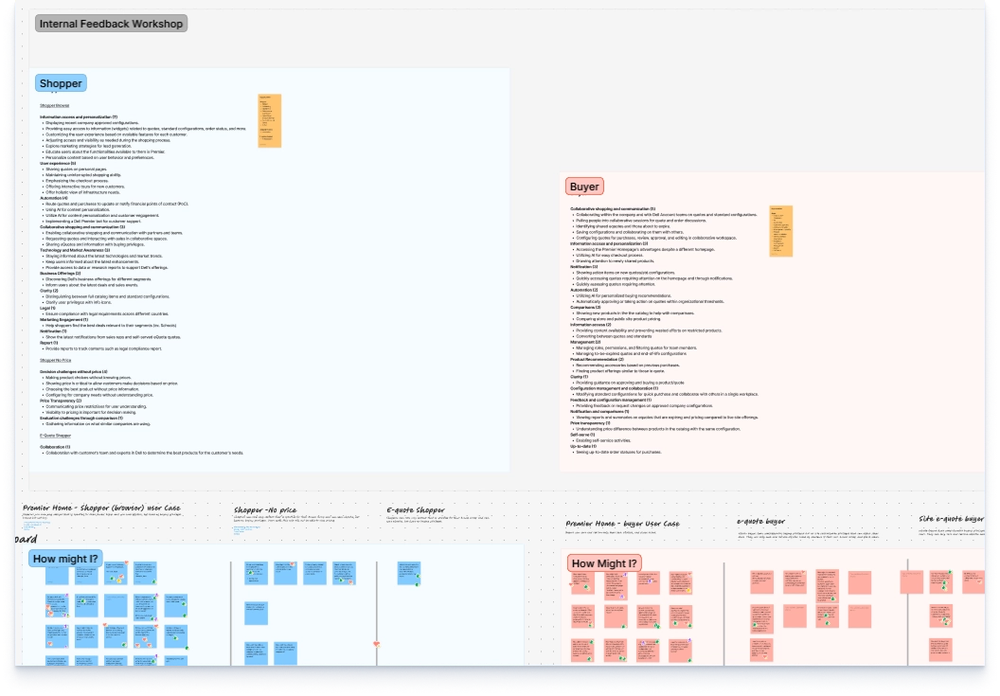
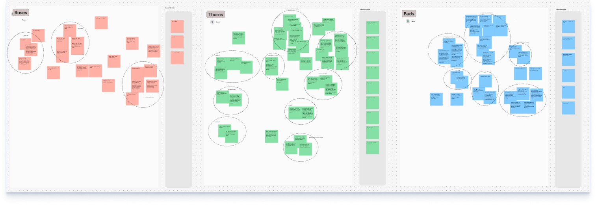
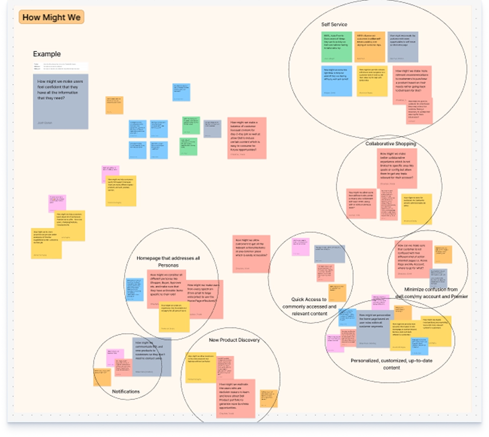
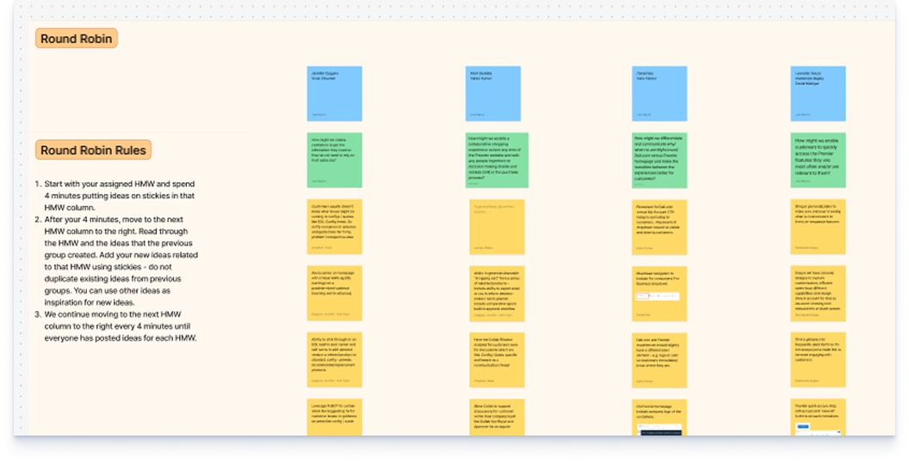
02 — Framing
How might we…
- get customers the information they need, so they don’t have to rely on sales representatives?
- help customers quickly access the Premier features they use most and that matter to them?
- give each user type (shopper, buyer, admin) a valuable, delightful, tailored experience?
- personalize the homepage based on the customer’s intent?
03 — Design iterations
We iterated on the designs based on the research
Each iteration tested one of the insights from discovery.
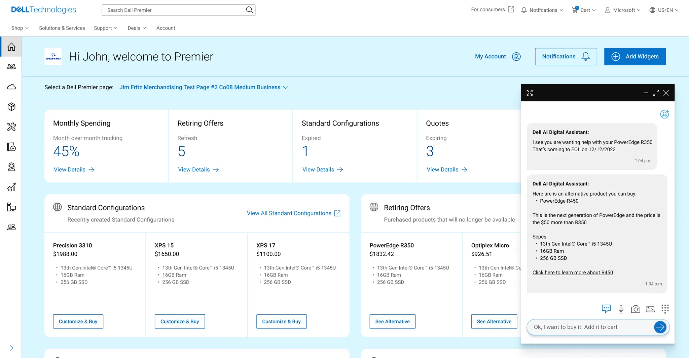
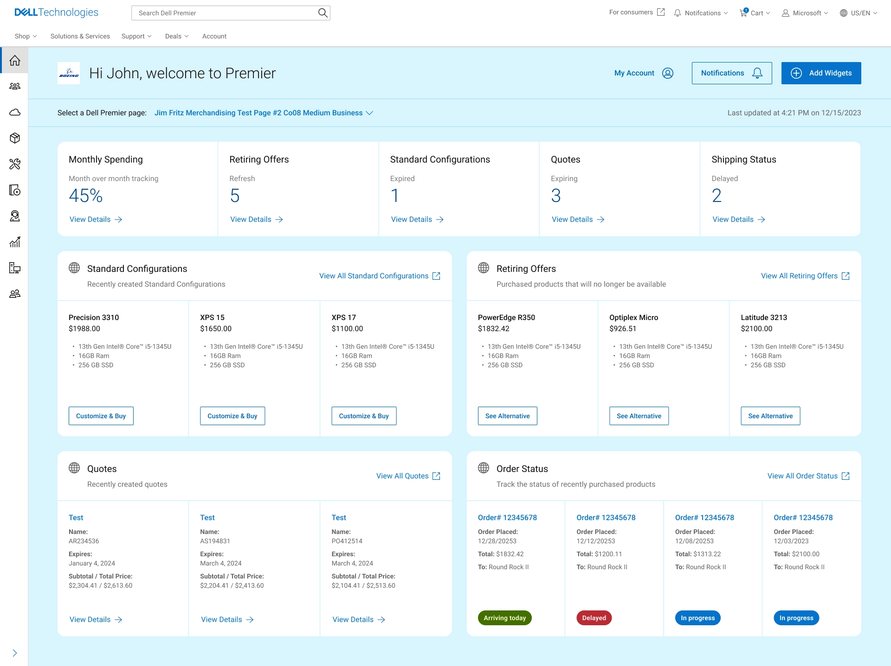
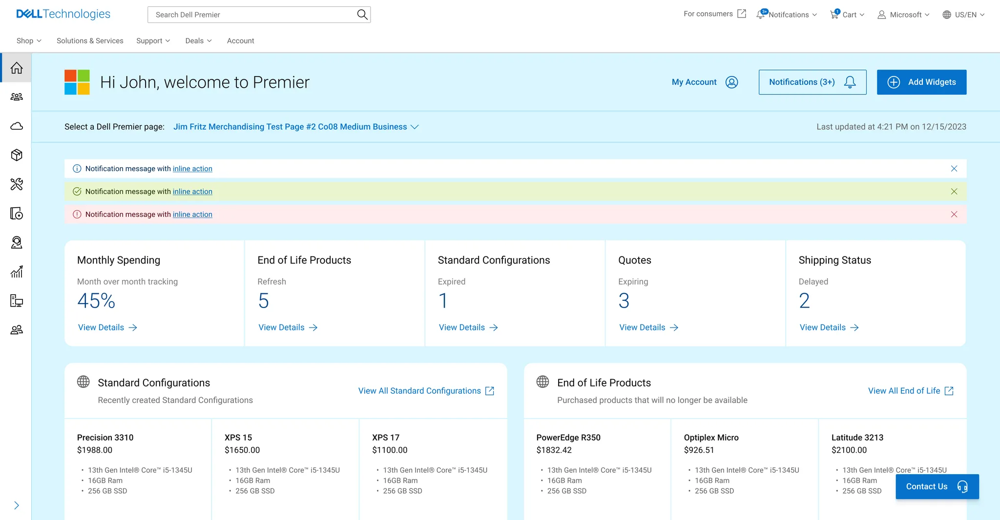
.webp)
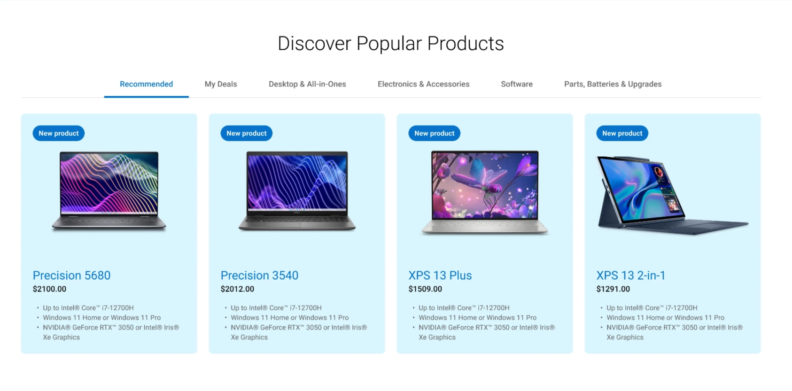
04 — Feedback
What customers said about the new design
90% of customers liked the new design because it gives them tailored data for their business.
They also pointed to a few opportunity areas:
- Wouldn’t scroll past the dashboard to explore other areas (4/11)
- Didn’t like the advertising banner (3/11)
- Didn’t order new products, so popular products weren’t needed (2/11)
Based on this feedback, Phase 2 focused on strengthening the Dell Premier experience.
05 — Final design
Quick access first, then purchase history
I prioritized quick access to the most frequently used features and key customer information.
Next, I used purchase history to surface frequently bought items for faster reordering.
Finally, I placed support and spotlight sections at the bottom of the page to finish the journey.
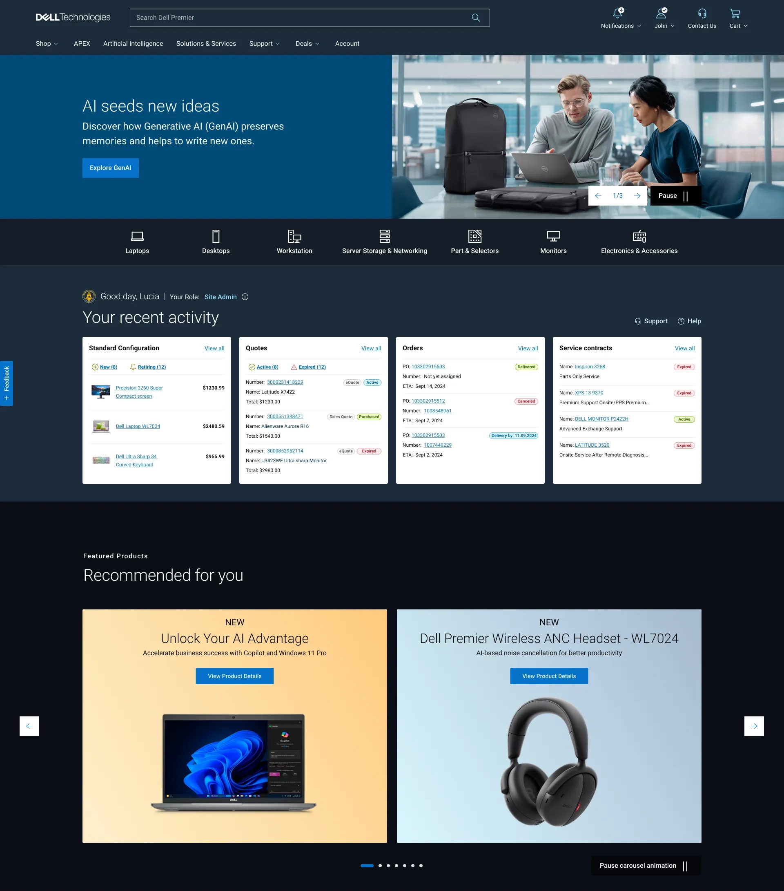
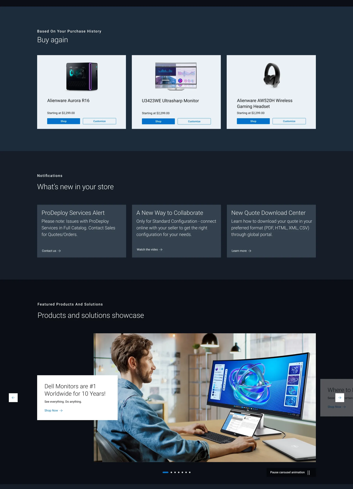
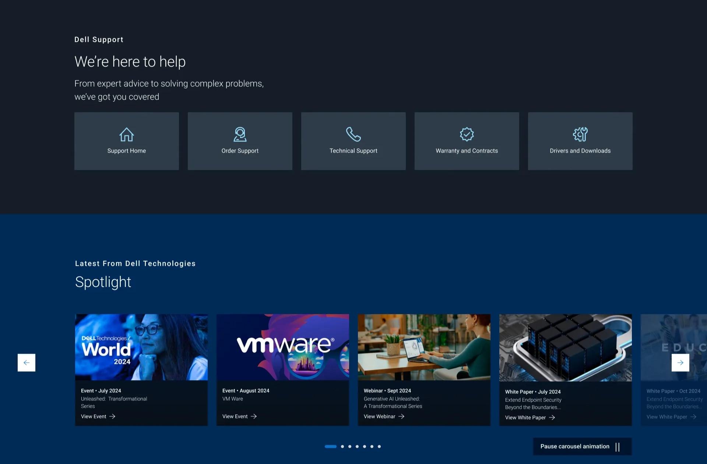
06 — Before and after
Before and after
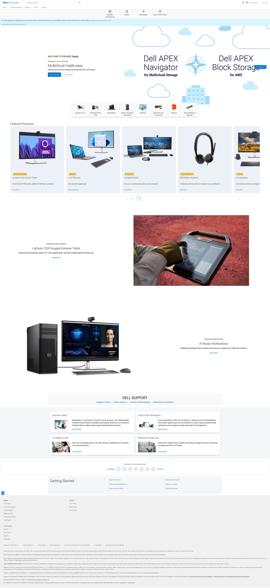
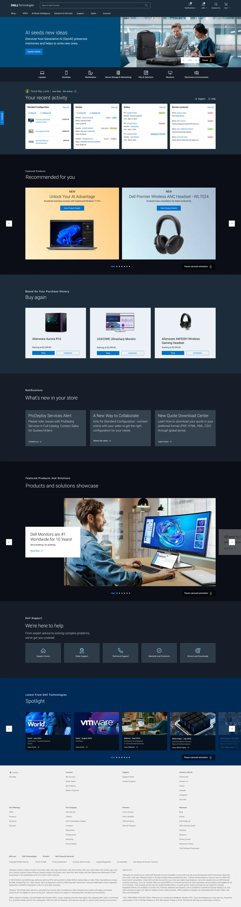
Results
What changed
- +9.9% increase in average order value (AOV)
- +7.1% increase in revenue per visit (RPV)
- Customers find key information and features without relying on sales representatives
- Personalized experiences for shoppers, buyers and admins